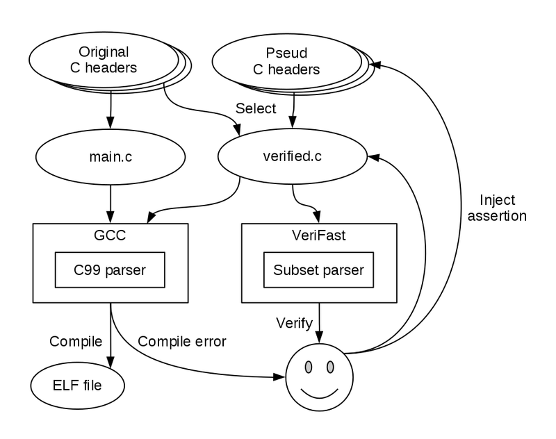
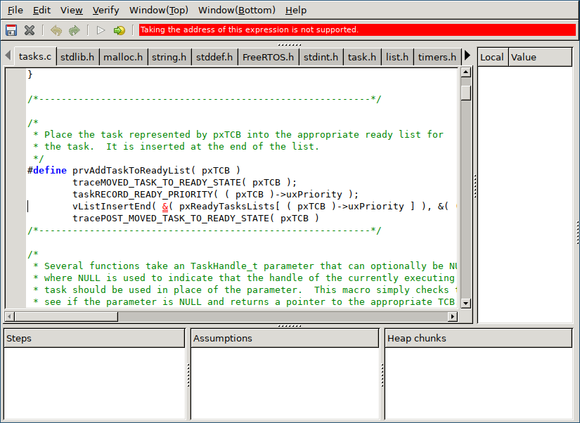

Switch VeriFast verifier to ATS language to create real product on Metasepi project.
We have tried to apply annotation to FreeRTOS using VeriFast until today, and would like to share the result.
First step, we tried to parse lib/FreeRTOS/list.c with VeriFast such like following:
$ vfide -D ESP_PLATFORM -D HAVE_CONFIG_H -D __XTENSA__ -D __IEEE_LITTLE_ENDIAN -I /home/kiwamu/src/amazon-freertos/demos/espressif/esp32_devkitc_esp_wrover_kit/common/application_code/espressif_code/freertos/include -I /home/kiwamu/src/amazon-freertos/demos/espressif/esp32_devkitc_esp_wrover_kit/common/config_files -I /home/kiwamu/src/amazon-freertos/lib/include -I /home/kiwamu/src/amazon-freertos/lib/include/private -I /home/kiwamu/src/amazon-freertos/lib/FreeRTOS/portable/ThirdParty/GCC/Xtensa_ESP32/include -I /home/kiwamu/src/amazon-freertos/lib/FreeRTOS-Plus-TCP/include -I /home/kiwamu/src/amazon-freertos/lib/FreeRTOS-Plus-TCP/source/portable/Compiler/GCC -I /home/kiwamu/src/amazon-freertos/lib/third_party/jsmn -I /home/kiwamu/src/amazon-freertos/demos/common/include -I /home/kiwamu/src/amazon-freertos/lib/third_party/mcu_vendor/espressif/esp-idf/components/app_trace/include -I /home/kiwamu/src/amazon-freertos/lib/third_party/mcu_vendor/espressif/esp-idf/components/app_update/include -I /home/kiwamu/src/amazon-freertos/lib/third_party/mcu_vendor/espressif/esp-idf/components/bootloader_support/include -I /home/kiwamu/src/amazon-freertos/lib/third_party/mcu_vendor/espressif/esp-idf/components/console -I /home/kiwamu/src/amazon-freertos/lib/third_party/mcu_vendor/espressif/esp-idf/components/cxx/include -I /home/kiwamu/src/amazon-freertos/lib/third_party/mcu_vendor/espressif/esp-idf/components/driver/include -I /home/kiwamu/src/amazon-freertos/lib/third_party/mcu_vendor/espressif/esp-idf/components/esp32/include -I /home/kiwamu/src/amazon-freertos/lib/third_party/mcu_vendor/espressif/esp-idf/components/esp_adc_cal/include -I /home/kiwamu/src/amazon-freertos/demos/espressif/esp32_devkitc_esp_wrover_kit/common/application_code/espressif_code/ethernet/include -I /home/kiwamu/src/amazon-freertos/lib/third_party/mcu_vendor/espressif/esp-idf/components/expat/port/include -I /home/kiwamu/src/amazon-freertos/lib/third_party/mcu_vendor/espressif/esp-idf/components/expat/include/expat -I /home/kiwamu/src/amazon-freertos/lib/third_party/mcu_vendor/espressif/esp-idf/components/fatfs/src -I /home/kiwamu/src/amazon-freertos/lib/third_party/mcu_vendor/espressif/esp-idf/components/heap/include -I /home/kiwamu/src/amazon-freertos/lib/third_party/mcu_vendor/espressif/esp-idf/components/log/include -I /home/kiwamu/src/amazon-freertos/demos/espressif/esp32_devkitc_esp_wrover_kit/common/application_code/espressif_code/mbedtls/port/include -I /home/kiwamu/src/amazon-freertos/lib/third_party/mbedtls/include -I /home/kiwamu/src/amazon-freertos/lib/third_party/mcu_vendor/espressif/esp-idf/components/micro-ecc/micro-ecc -I /home/kiwamu/src/amazon-freertos/lib/third_party/mcu_vendor/espressif/esp-idf/components/newlib/platform_include -I /home/kiwamu/src/amazon-freertos/lib/third_party/mcu_vendor/espressif/esp-idf/components/newlib/include -I /home/kiwamu/src/amazon-freertos/lib/third_party/mcu_vendor/espressif/esp-idf/components/nghttp/port/include -I /home/kiwamu/src/amazon-freertos/lib/third_party/mcu_vendor/espressif/esp-idf/components/nghttp/nghttp2/lib/includes -I /home/kiwamu/src/amazon-freertos/lib/third_party/mcu_vendor/espressif/esp-idf/components/nvs_flash/include -I /home/kiwamu/src/amazon-freertos/lib/third_party/mcu_vendor/espressif/esp-idf/components/openssl/include -I /home/kiwamu/src/amazon-freertos/lib/third_party/mcu_vendor/espressif/esp-idf/components/pthread/include -I /home/kiwamu/src/amazon-freertos/lib/third_party/mcu_vendor/espressif/esp-idf/components/sdmmc/include -I /home/kiwamu/src/amazon-freertos/lib/third_party/mcu_vendor/espressif/esp-idf/components/soc/esp32/include -I /home/kiwamu/src/amazon-freertos/lib/third_party/mcu_vendor/espressif/esp-idf/components/soc/include -I /home/kiwamu/src/amazon-freertos/lib/third_party/mcu_vendor/espressif/esp-idf/components/spi_flash/include -I /home/kiwamu/src/amazon-freertos/lib/third_party/mcu_vendor/espressif/esp-idf/components/spiffs/include -I /home/kiwamu/src/amazon-freertos/demos/espressif/esp32_devkitc_esp_wrover_kit/common/application_code/espressif_code/tcpip_adapter/include -I /home/kiwamu/src/amazon-freertos/lib/third_party/mcu_vendor/espressif/esp-idf/components/ulp/include -I /home/kiwamu/src/amazon-freertos/lib/third_party/mcu_vendor/espressif/esp-idf/components/vfs/include -I /home/kiwamu/src/amazon-freertos/lib/third_party/mcu_vendor/espressif/esp-idf/components/wear_levelling/include -I /home/kiwamu/src/amazon-freertos/lib/third_party/mcu_vendor/espressif/esp-idf/components/wpa_supplicant/include -I /home/kiwamu/src/amazon-freertos/lib/third_party/mcu_vendor/espressif/esp-idf/components/wpa_supplicant/port/include -I /home/kiwamu/src/amazon-freertos/lib/third_party/mcu_vendor/espressif/esp-idf/components/esp32/include -I /home/kiwamu/src/amazon-freertos/lib/third_party/mcu_vendor/espressif/esp-idf/components/xtensa-debug-module/include -I /home/kiwamu/src/amazon-freertos/demos/espressif/esp32_devkitc_esp_wrover_kit/make/build/include -I lib/FreeRTOS lib/FreeRTOS/list.cAbove means there are no pseud C headers for VeriFast. Many people use such pseud headers to focus verifying C language as target. Why? Because VeriFast parser is not compatible with GCC or C99:

Indeed, above vfide can’t parse the list.c file. Finally, we gave up to verify target code without such pseud C headers. But we believe there should be no such pseud C headers to rewrite (or snatch) NetBSD kernel for real product, because verifing total of the kernel is hard. Such pseud headers divide target code into verified code and pseud interface. Nobody guarantee pseud interface matches real implementation.
Second step, we tried to parse lib/FreeRTOS/tasks.c with VeriFast such like following:
$ vfide -disable_overflow_check -I verifast_inc lib/FreeRTOS/tasks.cFortunately, this trying got successful with a few changed target code and modified VeriFast parser. But unfortunately, it’s hard to make C99 compatible parser of original VeriFast own parser. We believe making C99 parser from scratch using LLVM/GCC is better to modify VeriFast parser.
Third step, we tried to inject VeriFast annotation comment into xTaskCreate function on lib/FreeRTOS/tasks.c. But we gave up at following error to be fixed:
$ cat lib/FreeRTOS/tasks.c
--snip--
BaseType_t xTaskCreate( TaskFunction_t pxTaskCode,
const char * const pcName,
const configSTACK_DEPTH_TYPE usStackDepth,
void * const pvParameters,
UBaseType_t uxPriority,
TaskHandle_t * const pxCreatedTask )
//@ requires chars(pcName, configMAX_TASK_NAME_LEN, _) &*& pointer(pxCreatedTask, _) &*& uxCurrentNumberOfTasks |-> _ &*& pxCurrentTCB |-> _ &*& uxTaskNumber |-> _ &*& uxTopReadyPriority |-> _ &*& xSchedulerRunning |-> _ &*& xLISTs(pxReadyTasksLists, configMAX_PRIORITIES);
//@ ensures chars(pcName, configMAX_TASK_NAME_LEN, _) &*& pointer(pxCreatedTask, _) &*& uxCurrentNumberOfTasks |-> _ &*& pxCurrentTCB |-> _ &*& uxTaskNumber |-> _ &*& uxTopReadyPriority |-> _ &*& xSchedulerRunning |-> _ &*& xLISTs(pxReadyTasksLists, configMAX_PRIORITIES);
--snip--
$ verifast -disable_overflow_check -c -I verifast_inc lib/FreeRTOS/tasks.c
lib/FreeRTOS/tasks.c
lib/FreeRTOS/tasks.c(238,18-19): Taking the address of this expression is not supported.
$ vfide -disable_overflow_check -I verifast_inc lib/FreeRTOS/tasks.c
Fixing above error is very hard on both modifing VeriFast and tasks.c for us…
More detail of this trying is found at this gist in Japanese.
Let’s do KPT, before closing this Chiers iteration.
malloc in C language today. Please imagine 3D array allocation.const and volatile.const and volatile on ATS’s at-view.Totally, we should leave Chiers iteration, which means giving up VeriFast for real product. VeriFast is a good part to learn verification on C language for education or academic. Sometimes, it’s useful to verify real product such like Linux kernel. However such real verification also depends on many pseud C headers, because VeriFast is not compatible with C99 and GCC.
Please imagine you feel free to inject VeriFast annotate comment into NetBSD kernel. Undoubtedly, it’s paradise on both implementer and prover. But, there are also the high-solid wall. It’s creating full compatible VeriFast C language parser, which needs huge human resources. Everyone, include us, can’t pay the resources until today…
What’s next? Before this iteration, we choose ATS language on Bohai iteration. Why did we switch to VeriFast? Because VeriFast doesn’t need rewriting current implementation. If we rewrite (or snatch) NetBSD kernel using ATS, we should rewrite all of the C language implementation in ATS language such like:
Above 2nd stage needs much human resources. While such trying, we found VeriFast and started new Chiers iteration. We imagine we introduce annotation to verify C language code without modify the implementation such lile:
But VeriFast doesn’t have C99 compatible parser. Then today, VeriFast verification process is such like:
We think above process is as hard as ATS way, because it also needs rewriting (or snatching). If so, why not choose ATS from the first?
Fortunately, ATS3 is launched at the beginning of this year. We will try to write small but real product using ATS2, and know useful requirement for ATS3.
However, it’s not just retreating. After Chiers iteration closes today, reboot Bohai iteration with our experience of VeriFast tomorrow.
blog comments powered by